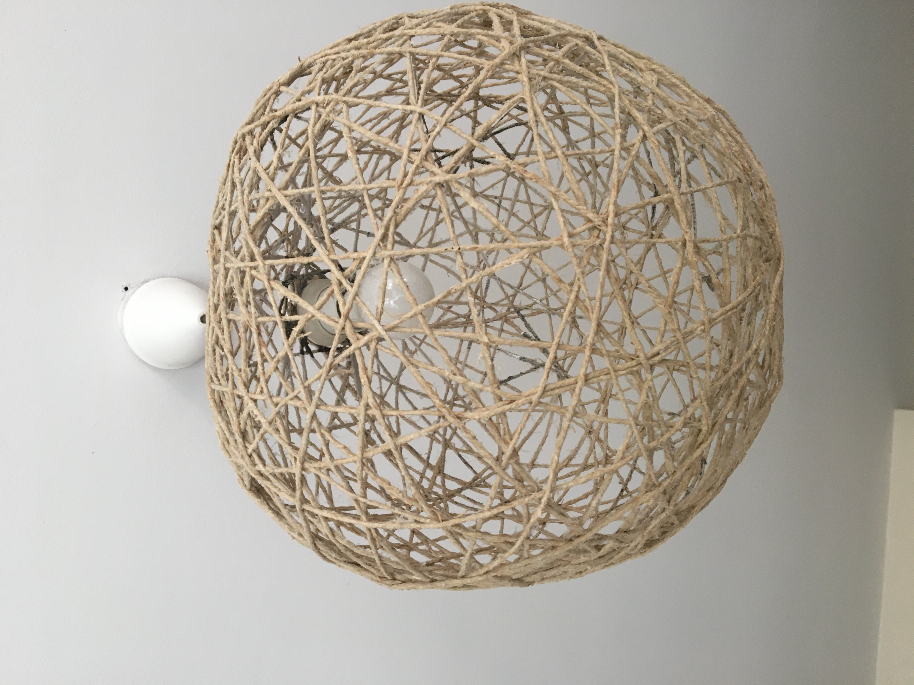
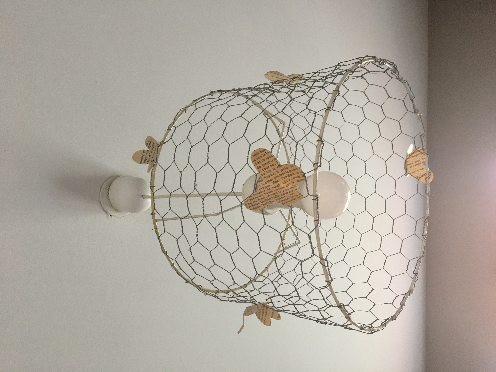
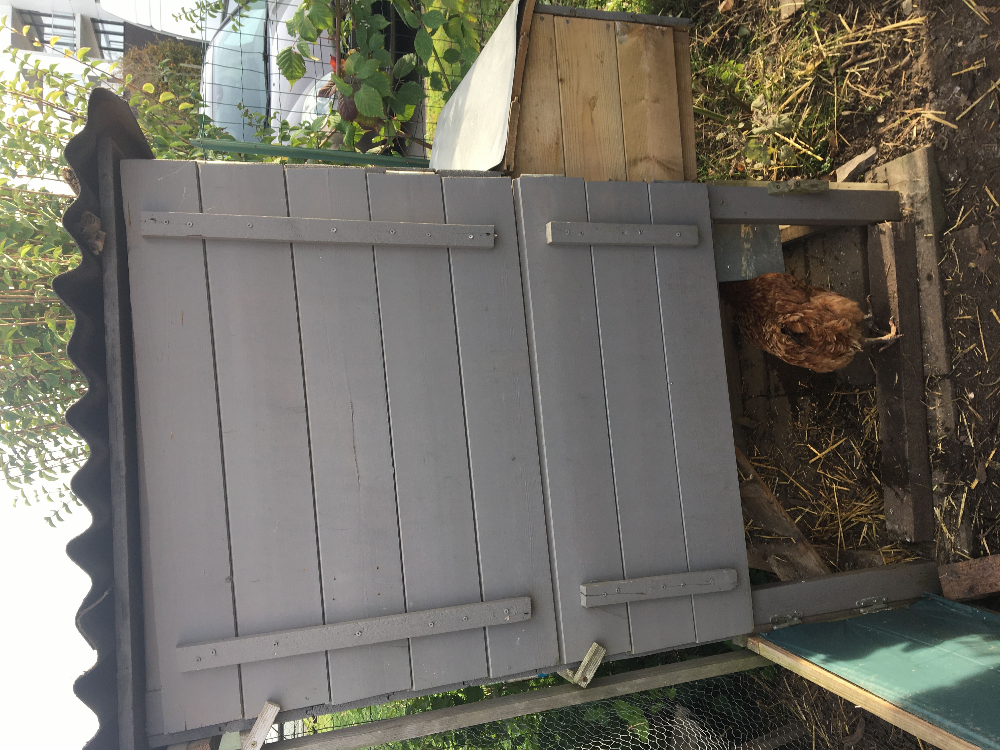

Luminaires
Ces luminaires ont été fabriquées avec des produits naturels, l’un avec de la ficelle en jute et de la colle et l’autre avec un grillage à poules.


Ces luminaires ont été fabriquées avec des produits naturels, l’un avec de la ficelle en jute et de la colle et l’autre avec un grillage à poules.
Réalisés pour la première fois en 2021 avec des branches de sapins, lierre, houx, eucalyptus... que du végètal. Une couronne naturelle qui se recycle
 Réalisation d’un poulailler pour accueillir de belles poules pondeuses et avoir de bons oeufs bien frais chaque jour.
Récupération de chaises hautes, remise en état de l’assise avec un cuir recyclé. Photos AVANT/APRES :